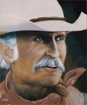
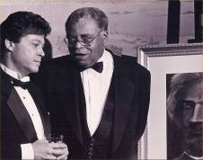

About the Artist
He has enjoyed a rewarding career in the visual arts. His work has been featured in magazines and news articles, he has designed for numerous clientele including General Electric, Dupont Corporation, the National Park Service, and he has painted a commissioned portrait of renowned American actor Robert Duvall. (A reproduction of the portrait is shown at the bottom of this page.) In his earlier years of commercial design, Wine was awarded honors from Print Magazine, a highly acclaimed publication of international importance in the field of graphic design. Some of his works are included within the corporate collections of the Toyota Motor Corporation and the Jack Kent Cooke Foundation. A multi-faceted painter, Wine is not content to paint in one style. Although the majority of his work consists of land and waterscapes rendered with a soft, impressionistic touch, he is quite adept at a number of other genres.
“Americana,” a look back at America in her earlier years, is painted with carefully composed and well executed elements that take us for a delightful journey into the yesteryear of our country. These are meticulous, pain-staking works that incorporate 250 to 300 hours to complete. The works are described by many as “delightful” and “a dance for the eye.” The works have been reproduced by various companies for puzzles and calendars.
To view additional styles, click “the art” at the top of the page. To contact the artist, Click Here.
Below: In his early career:
Above: Radford Wine and esteemed actor Robert Duvall await the unveiling of the artist’s portrait of Duvall as “Gus” from the motion picture, “Lonesome Dove”. Above: Duvall’s reaction.

“Gus”
Radford Wine
Acrylic on Panel
1995

Radford Wine and renowned actor, James Earl Jones, discuss the painter’s fiery portrait of the abolitionist and freedom-fighter Frederick Douglass at a benefit dinner.